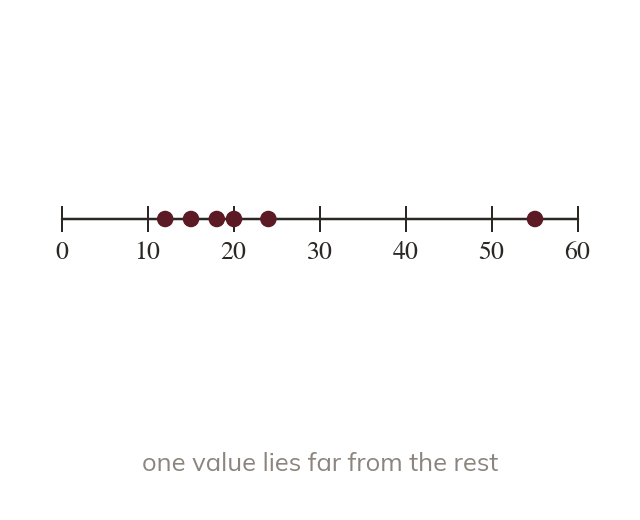
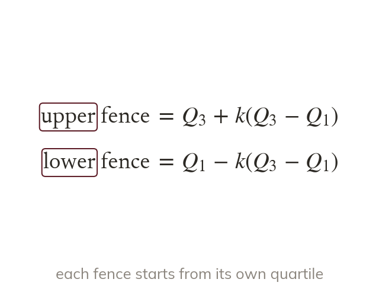
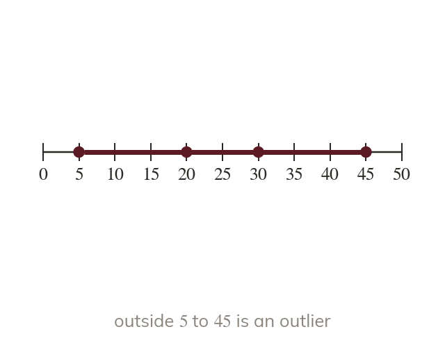
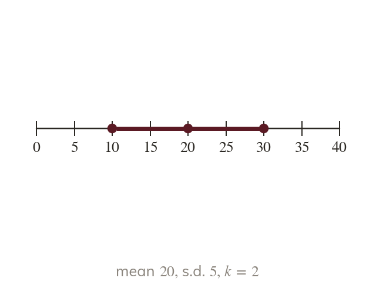
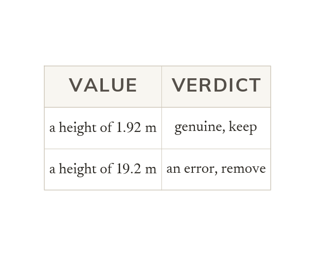
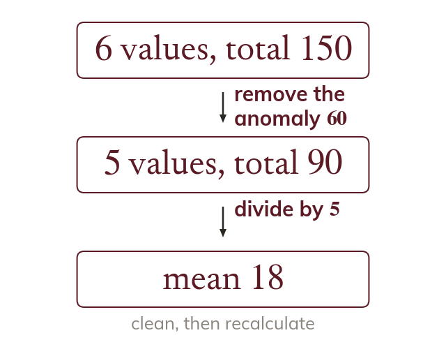

An extreme value
An outlier is a value far from the rest of the data. It may be a genuine value or an error.
One extreme value can drag a mean or a range a long way, so outliers are found and judged before data are summarised. The fences found here are the ones the next lesson marks on a box plot.
Work down the page at your own pace. Write every answer in your book first, then click to check it.
Read each card, then follow the worked examples one step at a time.

An outlier is a value far from the rest of the data. It may be a genuine value or an error.

A value above the upper fence or below the lower fence is an outlier. The question gives , often

With , and the IQR is and
The fences are and
Pick an answer. If it's wrong, the feedback tells you which mistake it was.
Write the blanks in your book first, then tap each one to check.
Read each card, then follow the worked examples one step at a time.

Some questions call a value an outlier when it is more than standard deviations from the mean. The fences are mean − .d. and mean + .d.

An anomaly is an outlier that is an error, such as a height of m. A genuine extreme value stays in the data.

Remove each anomaly, then find the statistic again from the values left. Divide by the new number of values.
Pick an answer. If it's wrong, the feedback tells you which mistake it was.
Write the blanks in your book first, then tap each one to check.
Finished? Next lesson: 12.S3.2 Box Plots.
For each skill, tap the one that is true for you today. Your Revise pages start with anything you mark Not yet.
Your ratings are saved on this device only.
Log in, then search for a code to practise that skill.